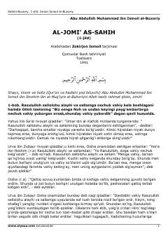

SBIslomning eng ishonchli hadis to'plami — Sahihi Buxoriyning birinchi jildi.
Bu kitob islom dinining eng ishonchli hadis to'plami bo'lgan 'Al-Jomi' as-Sahih'ning birinchi jildi bo'lib, Imom Muhammad ibn Ismoil al-Buxoriy tomonidan tartib berilgan. Arabchadan Zokirjon Ismoil tarjimasida nashr etilgan ushbu jild vahiyning kelishi, niyat va boshqa muhim mavzulardagi hadislarni o'z ichiga oladi. Kitob 1991-yilda Toshkentda Qomuslar Bosh tahririyati tomonidan chop etilgan.